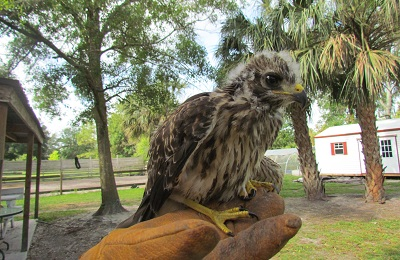

Russ is a blind deer. He was brought to us by a hunter who found him wandering alone in the woods.Meet Nugget. He is learning how to climb trees and will be released in a few more weeks.This is Ellie. She was neglected by her owner and malnourished when she was rescued.Say hello to Vinny! His back legs are injured, making it difficult to walk.Rosie was just a baby when she arrived, now she has babies of her own.This is Squirt, one of Rosie's babies and the runt of the litter.Muffin was very thin when first rescued, now she loves running in the pasture.

Harley hawk was rescued at just three weeks old. He will be released after finishing rehab.Gizmo is a bearded dragon. He was abandoned by his previous owner and is now looking for a new home.Peaches is a cockatoo and was also abandoned by his previous owner. He loves to talk.Sonny was just a baby when she came to us for rehab.Victor has a rare bone disease called "shell pyramiding".